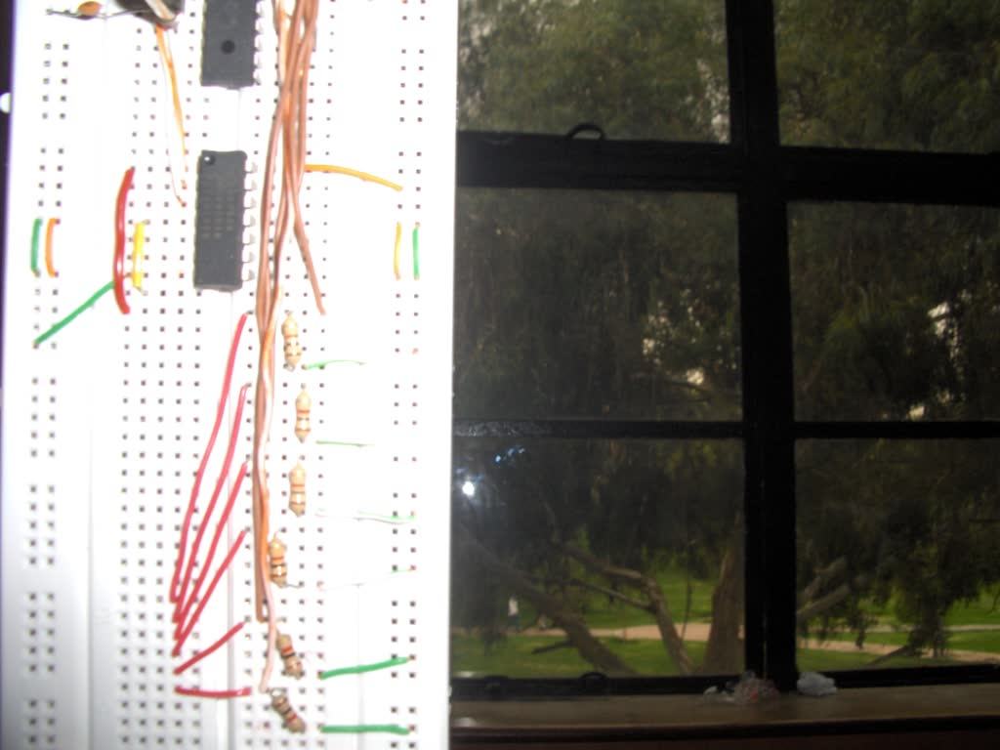
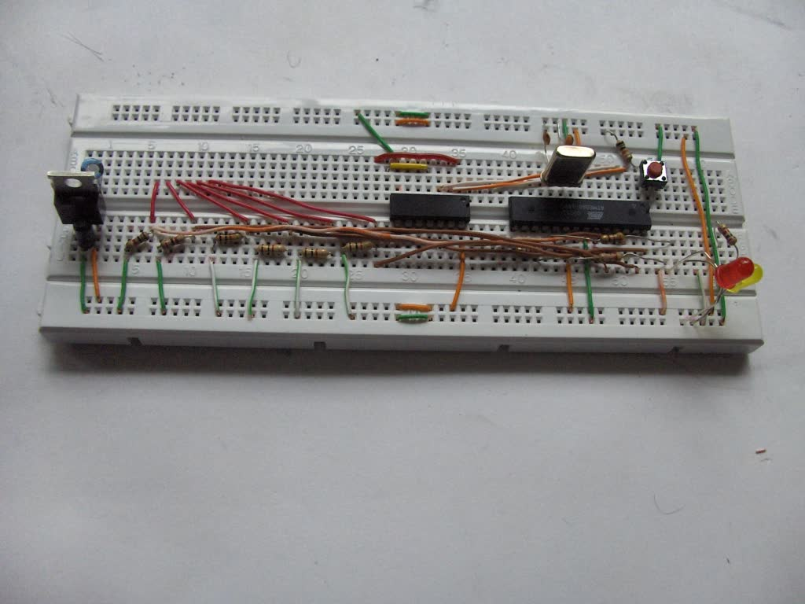
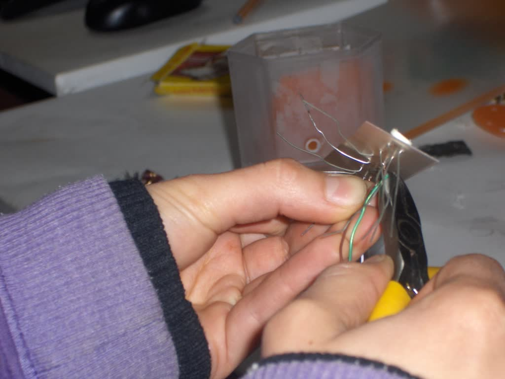
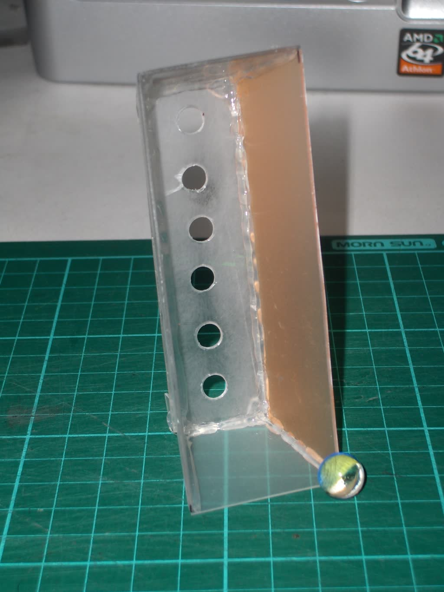
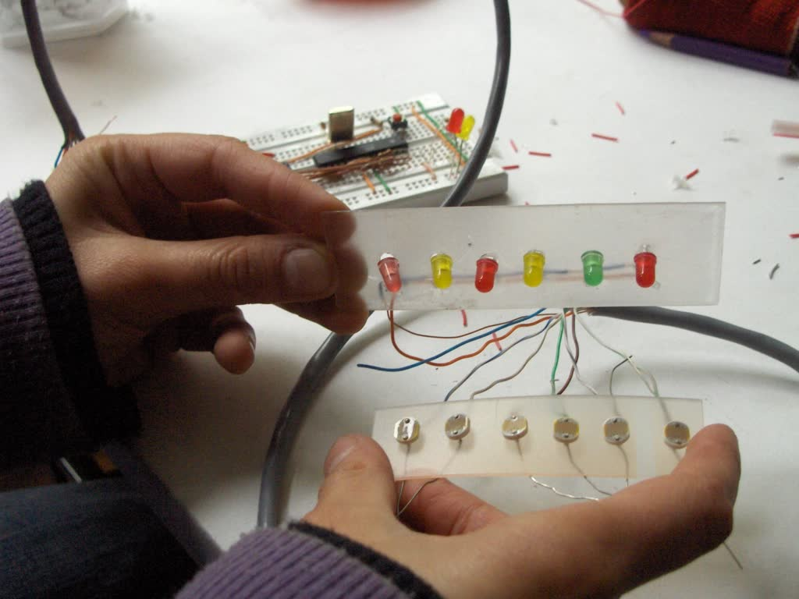
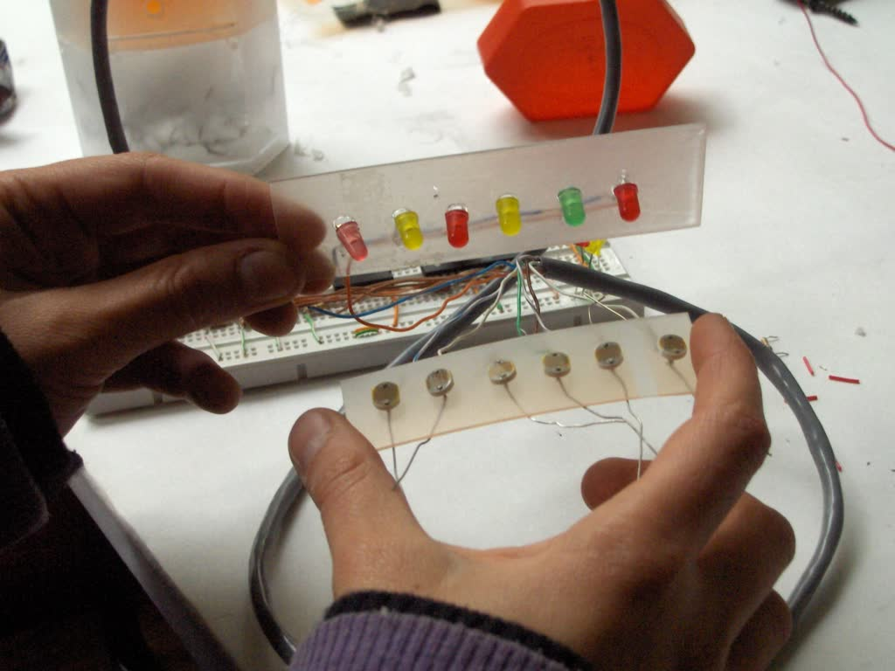
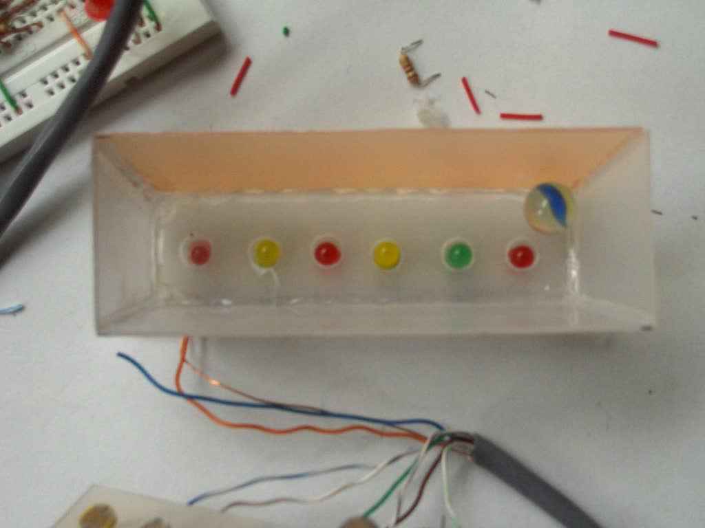
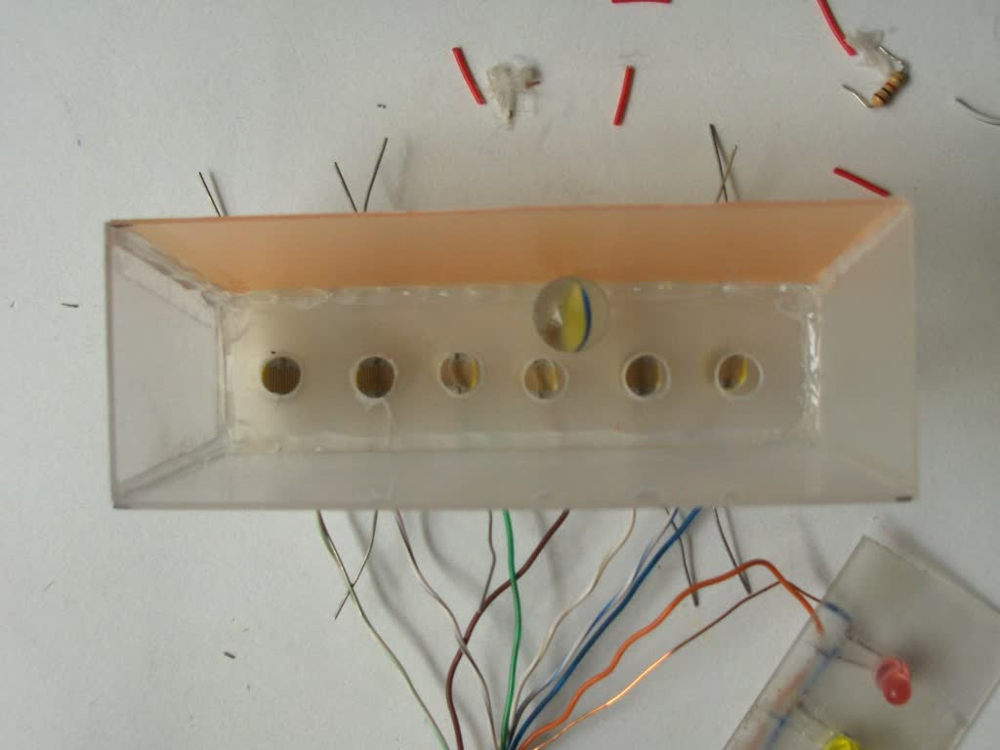
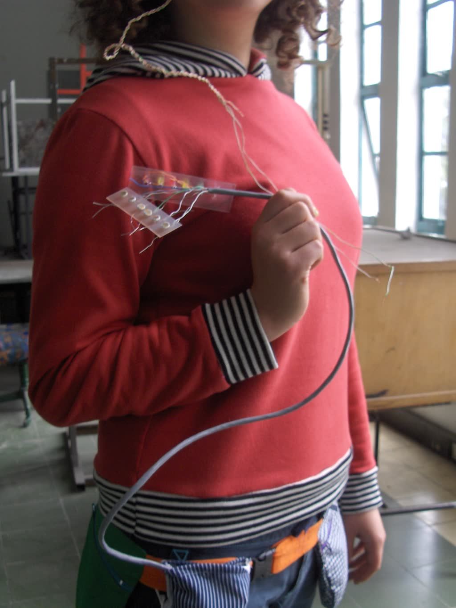

Derivador
- Fecha
- 2007
- Lugar
- Universidad Nacional de Colombia
- Rol
- Programador
- Tecnologías
- Arduino, programación para interacción
- Créditos
- Ricardo Alfonzo Dueñas / Costurero Eléctrico

Dispositivo portátil para derivar por la ciudad – Universidad Nacional de Colombia.







